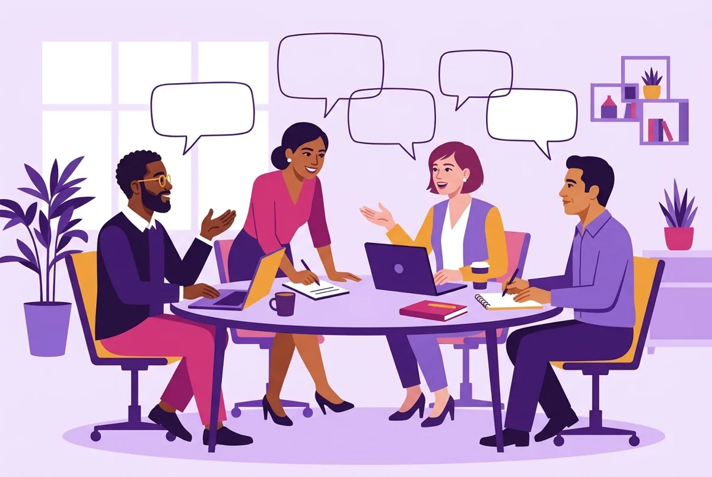
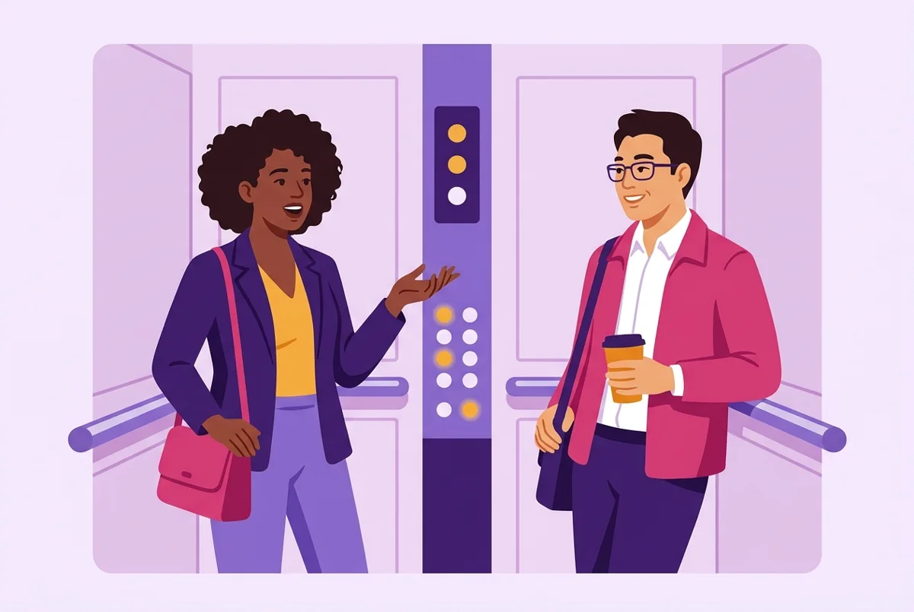
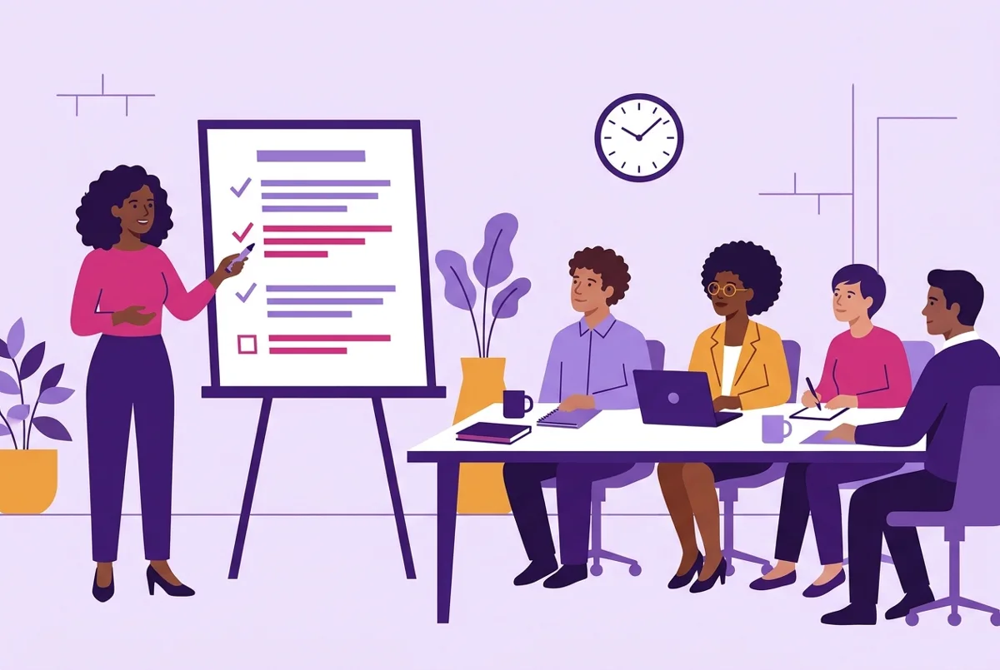
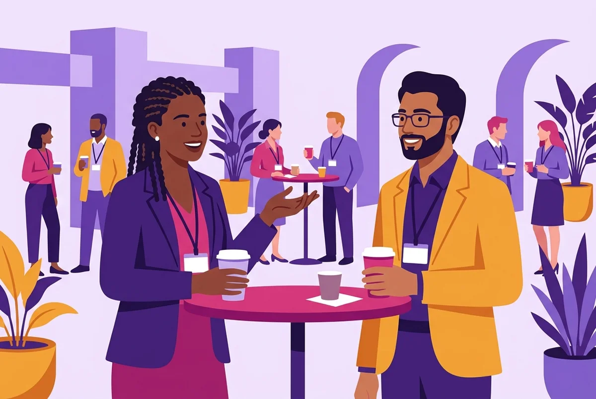
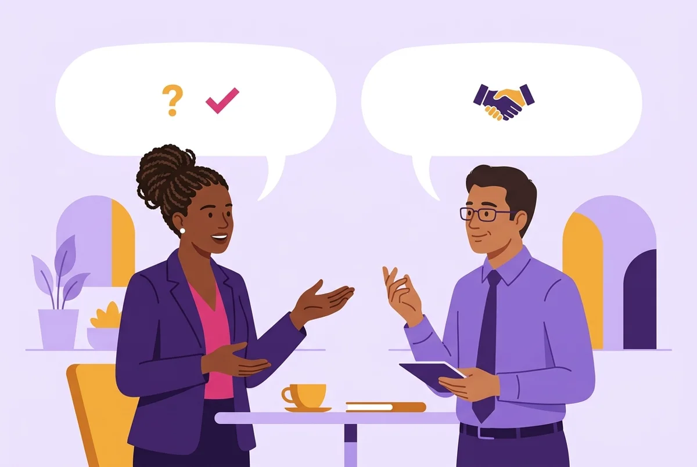
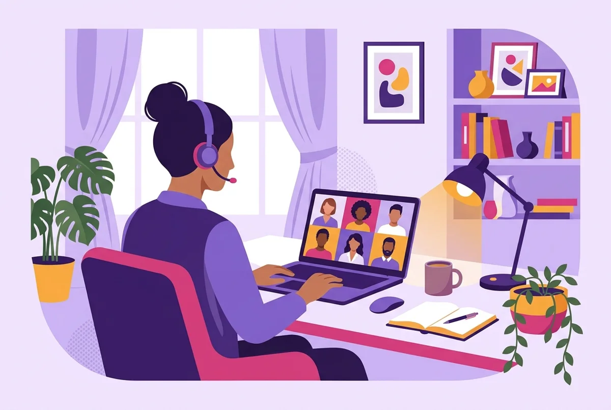
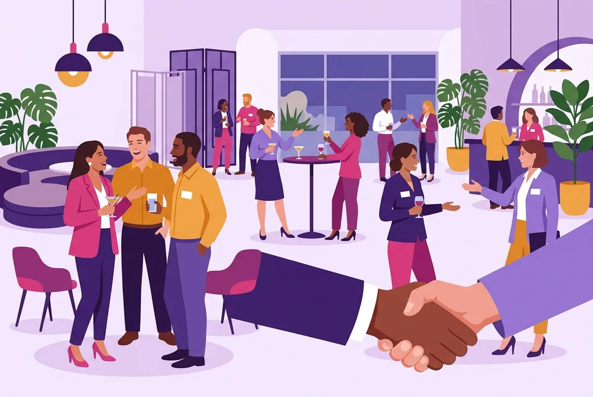
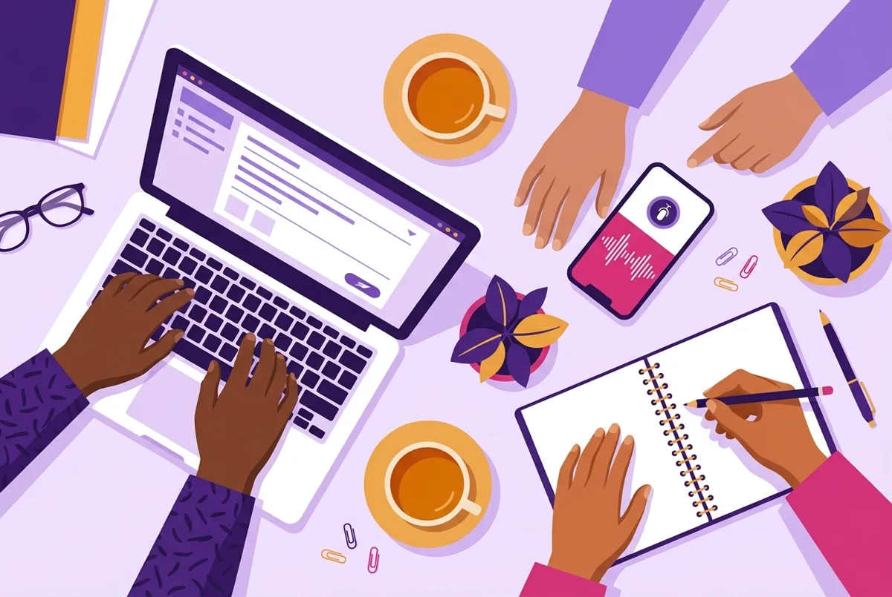

Professional English · Business Communication
An interactive lesson for working professionals: learn the language to open, lead and close a meeting with confidence.

Образец авторской разработки. Урок спроектирован для взрослой аудитории (специалисты, менеджеры, IT).
Step 1 · Warm-up · 5 min
Discuss in pairs. Then share your partner's answers with the group.

How many meetings do you have in a typical week?
What makes a meeting a waste of time?
Which meeting could have been an email? Why?
What is the best meeting you have ever attended?
Step 2 · Vocabulary · 10 min
Click each card to see the definition and an example. Then test yourself.

Choose the correct word.
Step 3 · Reading · 10 min
Read the dialogue, then decide if the statements are true or false.

Anna: Good morning, everyone. Thanks for joining. The aim of today's meeting is to agree on the launch date. Let's look at the agenda.
Mark: Before we start, could I add one item? We still need to discuss the budget.
Anna: Of course. Let's add it at the end. Sofia, could you update us on the design?
Sofia: Sure. We're two days behind schedule, but I think we can catch up if we get feedback by Thursday.
Mark: I'm afraid I can't agree. Thursday is too early for the client. I'd suggest postponing the launch until the 15th.
Anna: That's a fair point. Shall we vote? … All right, the 15th it is. Mark, you'll send the new deadline to the stakeholders.
Mark: No problem. I'll follow up by email today.
Anna: Great. To wrap up: new launch date is the 15th, Sofia needs feedback by Thursday, Mark writes to the client. Thanks, everyone.
Step 4 · Language focus · 12 min
Study the phrases. Notice the modal verbs: could, shall, would, I'd suggest + -ing.

Complete the sentences.
Step 5 · Speaking practice · 15 min
Work in groups of three. Generate a scenario, assign roles (chair, two participants) and hold a 5-minute meeting. Use at least six phrases from Step 4.


A random meeting scenario will appear here.
Step 6 · Feedback · 3 min
Tick everything you feel confident about.
Step 7 · Homework · 5 min
Write 80–100 words to the participants of the meeting from Step 3. Use the template.

Subject: Follow-up: launch date
Hi [name],
Thank you for joining today's meeting. To [summarise]…
[decision 1], [decision 2], [who does what by when].
Please let me know if I have missed anything.
Best regards,
[your name]
Finish all steps to see your result.